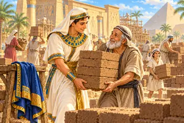

💗 חסד, צדקה והכנסת אורחים · 28 סיפורים
רבי פתח אוצרות בשני בצרת, אמר: יכנסו בעלי מקרא, בעלי משנה, בעלי תלמוד,נתינה בלי לביישהסוד השמור של מר עקבא ואשתואבא־אמנא היה בא לו שלום בכל־יום מישיבה של מעלה. מה מעשיו של אבא־אמנא?ר' אבא היה כורך מעות בסודרו ומפשילו לאחוריו וממציא עצמו לעניים ומעלים עינו[עני] אחד בא לפני רבא, אמר לו: במה אתה סועד? אמר לו: בתרנגלתמעשה בהלל הזקן שעשה סעדה לאדם אחד. ובא עני ועמד על פתחו ואמר:הסעודה הבלתי נשכחת בלבו של המדבר

הנסיך מהארמון שפתח את הלבהנשיא שעמד לשרת את אורחיואמרו עליו על ר' טרפון, שהיה עשיר גדול ולא היה נותן מתנות רבותר' הושעיא הגדול — היה רבו של בנו מאור־עינים, והיה למוד לאכל עמושמואל ואבלט היו יושבים, ראו בני־אדם הולכים לאגם, אמר לו אבלט לשמואל: אותוהלב הפתוח של רב הונאהאורח המופלא והירושה השייכת לכולם"וזרחה לכם יראי שמי שמש צדקה" – אבא־תחנה החסיד נכנס לעירו ערב שבתשנו רבותינו: מעשה במנבז המלך, שבזבז אוצרותיו ואוצרות אבותיו בשני בצרת, וחברו עליושנינו, אמרו עליו על בנימין הצדיק שהיה ממנה על־קפה של צדקה. פעם אחתכוחה של צדקה במעמקי היםמעשה בר' אליעזר ור' יהושע ור' עקיבא שהלכו לחולת אנטוכיא על עסק מגבתמעשה באדם שהיה עושה צדקה, מכר את־ביתו וכל־מה שהיה לו והוציא לצדקה. פעםפעם אחת נצרכו חכמים לנדבה. שלחו את־ר' עקיבא ואחד מן החכמים עמו. באוהשדה והמעשרותהילדים בשדה והאמונה של אמאר' אלעזר איש ברתותא כשראוהו גבאי צדקה נתחבאו מפניו, שכל־מה שהיה אצלו היהשש השנים הטובות והפקדון הנאמןרב חלבו חלה, יצא רב כהנא והכריז: רב חלבו חלה! לא היה מירבי עקיבא והמצווה שהפכה לדרך